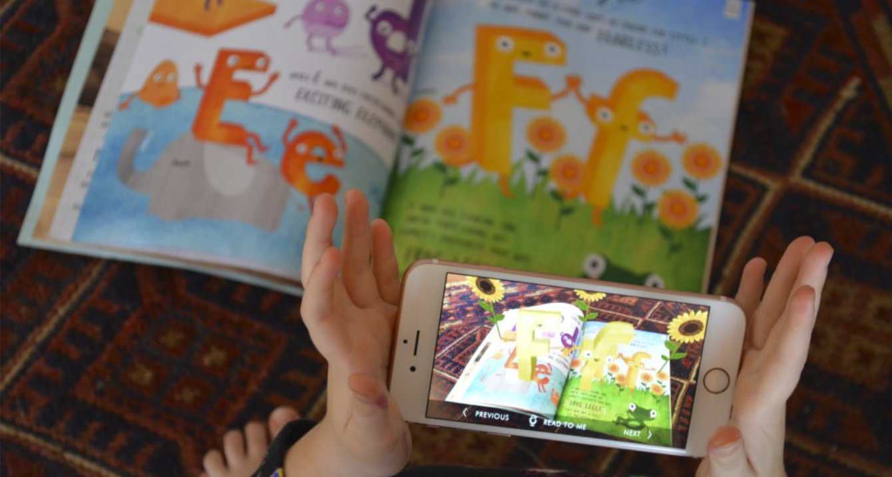

Augmented Vineyard
Carhartt
We partnered with the legendary Carhartt family and their beautiful winery, Carhartt Vineyard, to bring to life the first ever augmented reality wine application in Santa Barbara county. More specifically, in the beautiful Santa Ynez Valley. An idea surged within our company to change the wine tasting room experience and offer an innovative and informative application which could be enjoyed inside but also, outside the wine tasting room. A floating bottle of Sangiovese more than meets the eye.
